This is a basic example of the application of statistical data analytics tasks on the Emergency Department data in Australia.
Install packages
library(tidyverse)
library(ggplot2)
library(lubridate)
library(fitdistrplus)The first task any data analytics project would do is to investigate the data. As in this case, we will have a look at the data “govhack3” and discover how many hospitals listed in the data.
Read CSV
ed_data_link <- 'data/govhack3.csv'
top_row <- read_csv(ed_data_link, col_names = FALSE, n_max = 1)
second_row <- read_csv(ed_data_link, n_max = 1)
column_names <- second_row %>%
unlist(., use.names=FALSE) %>%
make.unique(., sep = "__") # double underscore
column_names[2:8] <- str_c(column_names[2:8], '0', sep='__')
daily_attendance <-
read_csv(ed_data_link, skip = 2, col_names = column_names)Print list
for (i in seq(2,64,7)) {
print.data.frame(top_row[i])
}
X2
1 Royal Perth Hospital
X9
1 Fremantle Hospital
X16
1 Princess Margaret Hospital For Children
X23
1 King Edward Memorial Hospital For Women
X30
1 Sir Charles Gairdner Hospital
X37
1 Armadale/Kelmscott District Memorial Hospital
X44
1 Swan District Hospital
X51
1 Rockingham General Hospital
X58
1 Joondalup Health CampusCleaning data is the next step to make the data tidier. “spread” and “gather” are used in this process.
The code below can be ellaborated in steps as shown:
Step 1: Gather all columns together except “Date” by the function gather().
Step 2: Separate the key function name “Attribute” into “Attributes” and “Hospitals” in order to separate the columns from hospitals by using “separate()” function.
Step 3: Use “mutate()” function to rename the attribute “Hospitals” by their own official names.
Step 4: Spread the key attribute and the values by using “spread()” function.
ed_data1 <- daily_attendance %>%
gather(key = "Attributes", value = "Values", -Date) %>%
separate(Attributes, c("Attributes", "Hospitals"), sep = "__") %>%
mutate(Hospitals = replace(Hospitals, Hospitals == 0, 'Royal Perth Hospital'),
Hospitals = replace(Hospitals, Hospitals == 1, 'Princes Margaret Hospital For Children'),
Hospitals = replace(Hospitals, Hospitals == 2, 'Princess Margaret Hospital For Children'),
Hospitals = replace(Hospitals, Hospitals == 3, 'King Edward Memorial Hospital For Women'),
Hospitals = replace(Hospitals, Hospitals == 4, 'Sir Charles Gairdner Hospital'),
Hospitals = replace(Hospitals, Hospitals == 5, 'Armadale/Kelmscott District Memorial Hospital'),
Hospitals = replace(Hospitals, Hospitals == 6, 'Swan District Hospital'),
Hospitals = replace(Hospitals, Hospitals == 7, 'Rockingham General Hospital'),
Hospitals = replace(Hospitals, Hospitals == 8, 'Joondalup Health Campus')) %>%
spread(Attributes, Values)
ed_data2 <- ed_data1 %>%
mutate(Date = as.Date(Date, format = '%d-%B-%Y'))Inspect data class
sapply(ed_data1, class)
Date Hospitals Admissions Attendance Tri_1
"character" "character" "character" "character" "character"
Tri_2 Tri_3 Tri_4 Tri_5
"character" "character" "character" "character" Change variables types
ed_data2 <- ed_data2 %>%
mutate(Attendance = as.integer(Attendance),
Admissions = as.integer(Admissions),
Tri_1 = as.integer(Tri_1),
Tri_2 = as.integer(Tri_2),
Tri_3 = as.integer(Tri_3),
Tri_4 = as.integer(Tri_4),
Tri_5 = as.integer(Tri_5))Replace missing values (N/A) with 0
ed_data3 <- ed_data2 %>%
mutate(Tri_1 = replace_na(Tri_1,0),
Tri_2 = replace_na(Tri_2,0),
Tri_3 = replace_na(Tri_3,0),
Tri_4 = replace_na(Tri_4,0),
Tri_5 = replace_na(Tri_5,0),)Royal Perth Hospital were chosen to be the targeted hospital for further analysis. The official name of the hospital is “Royal Perth Hospital” with 365 observations and 8 important variables including Date, Attendances, Admissions, Triage 1, Triage 2, Triage 3, Triage 4, and Triage 5.
royal_perth <- ed_data3 %>%
filter(Hospitals == 'Royal Perth Hospital')Show hospital name, total number of attendances and total number of admissions
cat("The hospital name is: ", unique(royal_perth$Hospitals), "\n")
The hospital name is: Royal Perth Hospital
cat("The total number of Attendance is:",sum(royal_perth$Attendance),"\n")
The total number of Attendance is: 82862
cat("The total number of Admissions is:",sum(royal_perth$Admissions))
The total number of Admissions is: 35126Show summary of Attendance and Admissions variables
3.1 Compare ED demands across the year
Data exploration is the first step to determine which distributions fit with the data best (Ricci, 2005).Series line graph is ideal in comparing the volume of ED demands across the year. ED demands were identified as both emergency attendance and emergency admissions and the results are shown below.
Plot ED demand attendance using line graph
library("ggplot2")
royal_perth %>%
ggplot(aes(x = Date, y = Attendance, group = 1)) +
geom_line() + geom_point() + ggtitle("Figure 1. Line graph of Attendence by Date")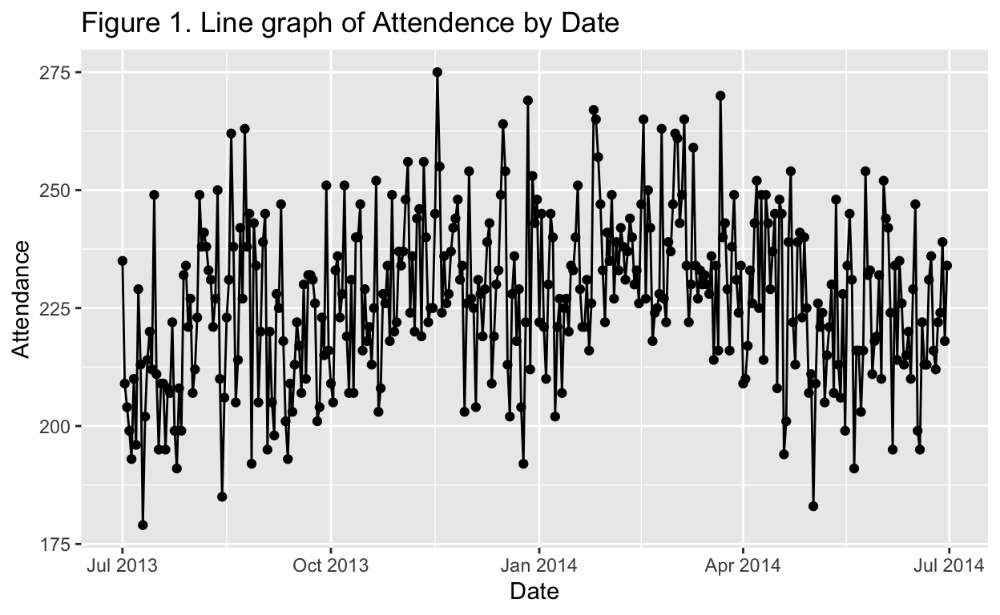
summary(royal_perth$Attendance)
Min. 1st Qu. Median Mean 3rd Qu. Max.
179 215 227 227 239 275 Figure 1 shows the Royal Perth Hospital attendance and admissions between Jul 2013 and Jul 2014. The graph seems to be fluctuated in a seasonal pattern. To explore more in detail, the detailed summary of the attendance variable were shown. The average emergency attendance in Royal Perth hospital is 227 per day and the maximum number of attendance was 275 for the last two years.
Plot ED demand admissions using line graph
royal_perth %>%
ggplot(aes(x = Date, y = Admissions, group = 1)) +
geom_line() + geom_point() + ggtitle("Figure 2. Line graph of Admission by Date")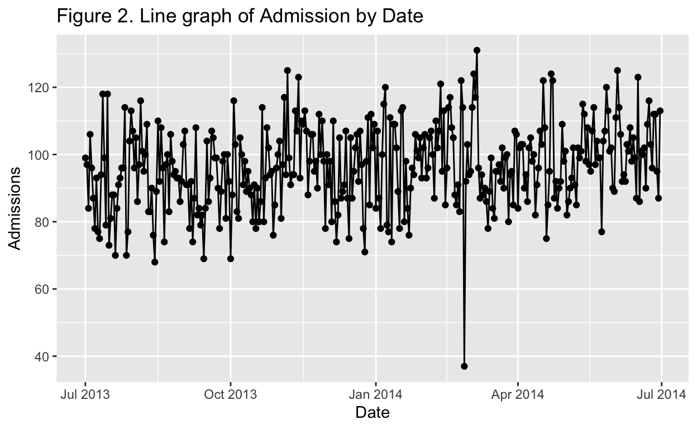
summary(royal_perth$Admissions)
Min. 1st Qu. Median Mean 3rd Qu. Max.
37.00 88.00 96.00 96.24 105.00 131.00 The line graph in Figure 2 shows admission fluctuated in a seasonal form but at some points in March 2014, the data dropped drastically to 37 (minimum). A detailed summary were shown in Figure 4. The average patients being admitted and directly admitted is 96 while the maximum number of admissions is 131 patients in the period of Jul 2013 and Jul 2014.
Arrange the data by Date (Ascending)
royal_perth <- royal_perth %>%
arrange(Date)3.2 How ED demands change during a week?
Transform Date into day of the week and calculate average value of attendance
library(lubridate)
weekly_attendance <- royal_perth %>%
mutate(day = Date) %>%
mutate(day = wday(Date, label = TRUE)) %>%
group_by(day) %>%
summarise(attendance_average = mean(Attendance))Transform Date into day of the week and calculate average value of admissions
weekly_admissions <- royal_perth %>%
mutate(day = Date) %>%
mutate(day = wday(Date, label = TRUE)) %>%
group_by(day) %>%
summarise(admissions_average = mean(Admissions))Join both weekly attendance and weekly admissions data together by “day”
weekly_join <- inner_join(weekly_attendance, weekly_admissions)Plot line graph of average attendance and admissions during one week in the year
weekly_join %>%
ggplot(aes(x = day)) +
geom_line(aes(y = attendance_average, group = 1, colour = "Attendance"))+
geom_line(aes(y = admissions_average, group = 1, colour = "Admissions")) +
geom_point(aes(y = attendance_average, group = 1, colour = "Attendance")) +
geom_point(aes(y = admissions_average, group = 1, colour = "Admissions")) +
scale_colour_manual(values = c("blue","red"), name = "ED Type", labels = c("Attendance", "Admissions"))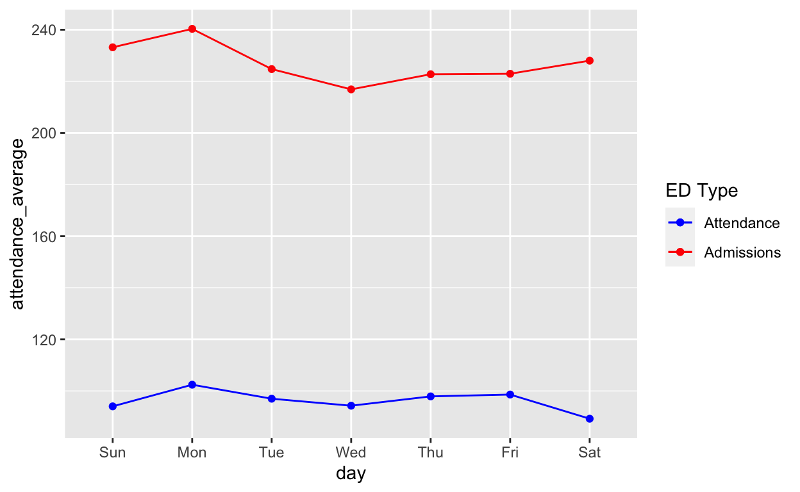
Based on the graph,it seems the busiest day of the week is Monday as explained by the peak point of both average attendance and average admissions number on Monday.
The distributions that are appropriate for ED demands which are discrete variables include normal distributions, Poisson distribution, and negative binomial distribution.
3.3 Appropriate distributions for modelling ED demand
Set seed = 741 and generate sample of 200 observations
set.seed(741)
sampled_data = sample_n(royal_perth, 200)Get summary of sampled_data
summary(sampled_data)
Date Hospitals Admissions
Min. :2013-07-01 Length:200 Min. : 68.00
1st Qu.:2013-09-18 Class :character 1st Qu.: 87.75
Median :2013-12-22 Mode :character Median : 95.00
Mean :2013-12-26 Mean : 95.46
3rd Qu.:2014-03-25 3rd Qu.:103.00
Max. :2014-06-30 Max. :124.00
Attendance Tri_1 Tri_2 Tri_3
Min. :183.0 Min. : 0.000 Min. :12.00 Min. : 53.00
1st Qu.:213.8 1st Qu.: 3.000 1st Qu.:31.00 1st Qu.: 72.00
Median :227.0 Median : 4.000 Median :35.00 Median : 79.00
Mean :226.3 Mean : 4.015 Mean :35.77 Mean : 80.64
3rd Qu.:238.0 3rd Qu.: 5.250 3rd Qu.:40.00 3rd Qu.: 89.00
Max. :267.0 Max. :15.000 Max. :55.00 Max. :113.00
Tri_4 Tri_5
Min. : 53.00 Min. : 0.0
1st Qu.: 80.00 1st Qu.:12.0
Median : 88.00 Median :16.0
Mean : 88.99 Mean :16.3
3rd Qu.: 99.00 3rd Qu.:20.0
Max. :129.00 Max. :37.0 Plot histogram of Attendance
hist(sampled_data$Attendance, main = "Histogram of Attendance", xlab = "Attendance")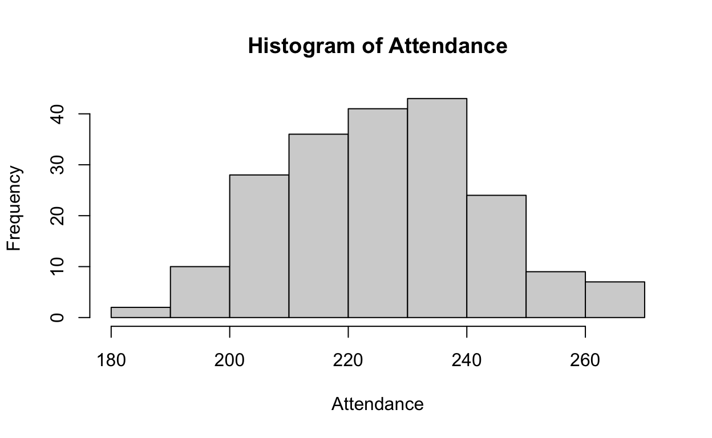
Plot histogram of admissions
hist(sampled_data$Admissions, main = "Histogram of Admissions", xlab = "Admissions")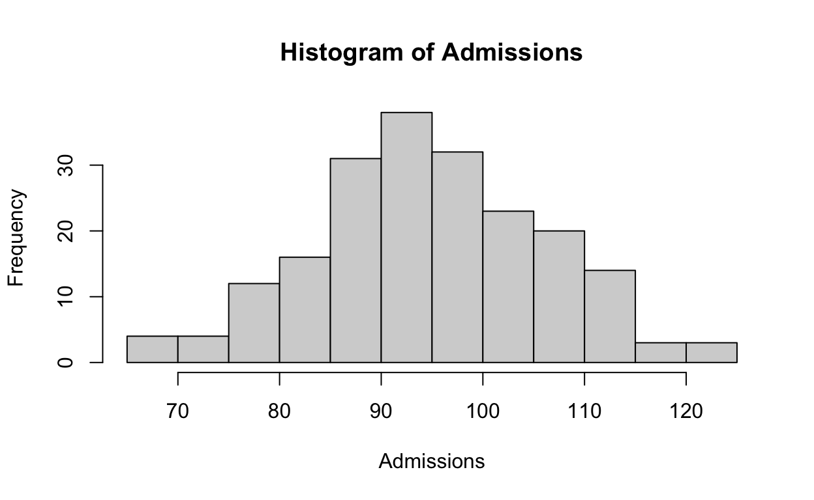
Call “fitdistrplus” library
library(fitdistrplus)Describe distribution of Attendance variable
var(sampled_data$Attendance)
[1] 294.5487
hist(sampled_data$Attendance)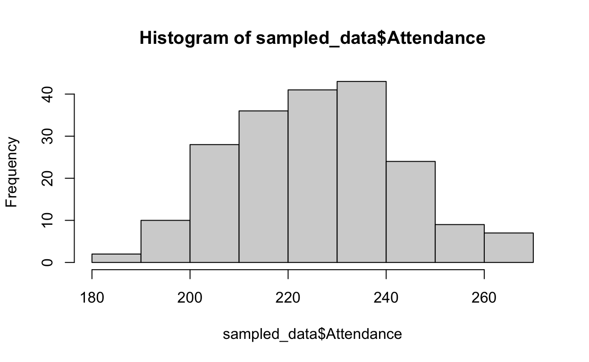
descdist(sampled_data$Attendance, boot = 100, discrete = TRUE)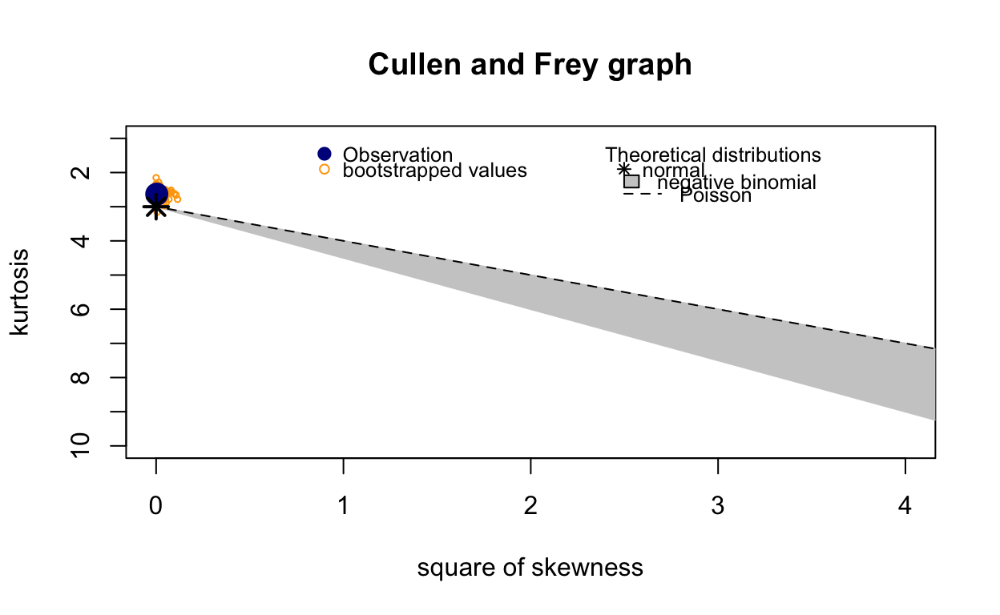
summary statistics
------
min: 183 max: 267
median: 227
mean: 226.345
estimated sd: 17.16242
estimated skewness: 0.05893257
estimated kurtosis: 2.632614 Describe distribution of Admissions variable
var(sampled_data$Admissions)
[1] 126.7019
hist(sampled_data$Admissions)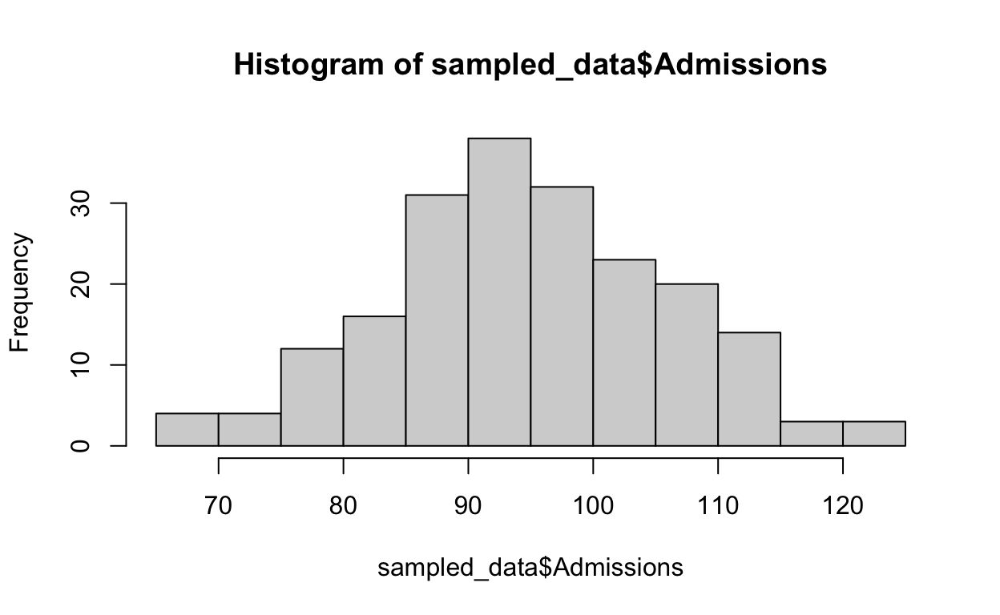
descdist(sampled_data$Admissions, boot = 100, discrete = TRUE)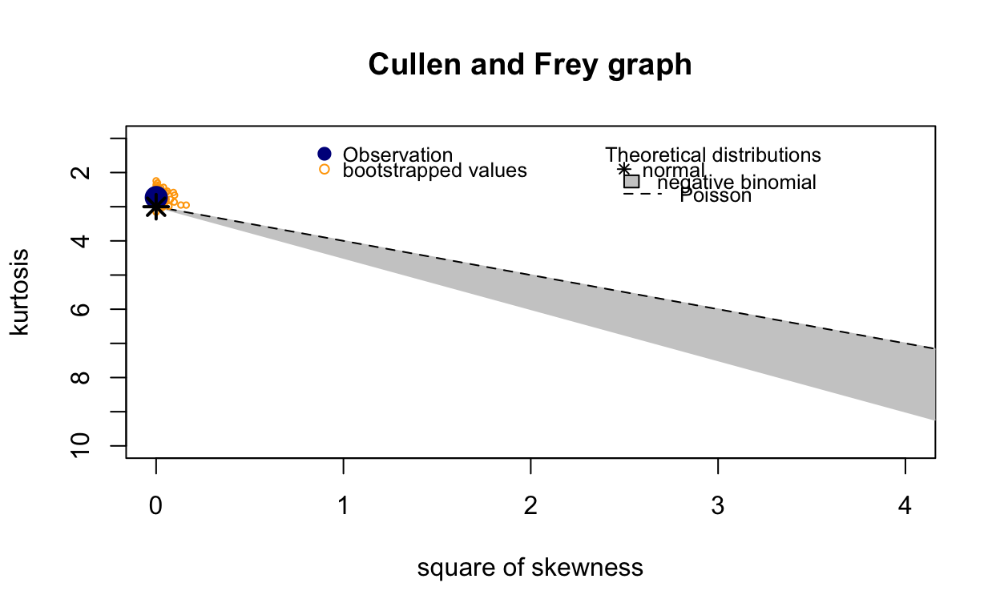
summary statistics
------
min: 68 max: 124
median: 95
mean: 95.46
estimated sd: 11.25619
estimated skewness: 0.02797309
estimated kurtosis: 2.729161 Based on (PennState Elderly College of Sciece, 2018), the Poisson distributions has the following assumptions:
The events occurrence must be independent.
The average number of occurrences cannot be simultaneous.
The time interval for probability distribution of the number of occurrences must be fixed or depends only on the length of the interval.
The variables that meet these assumptions for the Poisson distribution are emergency attendances and admissions. In other word, it is assumed that the attendances and admissions were recorded daily without being affected by any day of the time period. Also, the average number of attendance and admissions recorded are fixed and the time period is between 1st July 2013 and 30th June 2014 only.
In addition, the Cullen and Frey graph is clearly showing that the observation is approaching normal distribution as well as Poisson distribution for both variables.
Fit a Poisson distribution and a negative binomial distribution on Tri_2. By using “fitdist” function, distr = “pois”, the results from fitting the Poisson distributions were shown. Additionally, the method to evaluate the fit model is maximum likelihood estimation “mle”.
#Examining distributions
library(fitdistrplus)
estimator1 <- fitdist(sampled_data$Tri_2, "pois", method = "mle")
estimator1 %>%
plot()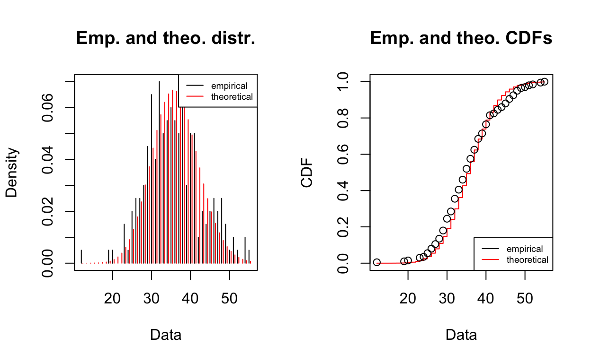
estimator1 %>%
summary()
Fitting of the distribution ' pois ' by maximum likelihood
Parameters :
estimate Std. Error
lambda 35.77 0.4229066
Loglikelihood: -687.0323 AIC: 1376.065 BIC: 1379.363 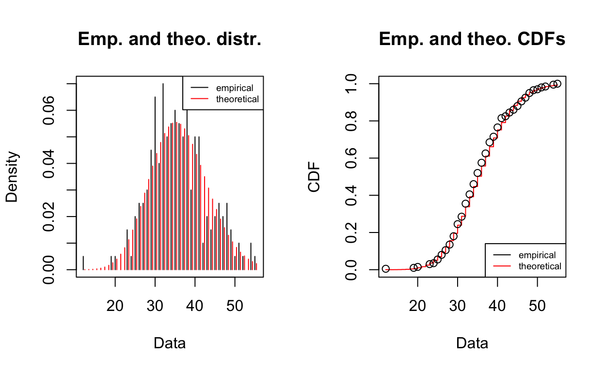
Fitting of the distribution ' nbinom ' by maximum likelihood
Parameters :
estimate Std. Error
size 77.27476 24.5800562
mu 35.77101 0.5115251
Loglikelihood: -678.8766 AIC: 1361.753 BIC: 1368.35
Correlation matrix:
size mu
size 1.0000000000 -0.0001983321
mu -0.0001983321 1.0000000000Usually, the preferred model is the one that has the minimized negative loglikelihood and base on Table 6, the negative binomial distribution is the best fitted one for Tri_2 variable. Furthermore, according to McNeese (2016), the smallest AIC (Akaike information criterion) value is the preferred model as well as the BIC (Bayesian Information Criterion). In this case, the AIC and BIC of negative binomial distribution are both smaller than those in Poisson Distribution.
Therefore, the best fitted distribution for the Tri_2 (Emergency) is negative binomial distribution.
There are many types of distribution fitting method available for discrete data like this analysis. Those include quantile matching estimation (QME), maximum goodness of fit estimation (MGE), and moment matching estimation (MME) (Marie et al, 2019). For the QME method, one of the benefit of using it is that it does not require the data being paired together and can also be used to identify asynchronous measurements which results from various applications (He et al. cited in Nikolaos et al, 2015). MQE is used to match the unconditional distribution functions which is different from conditional quantile regressions (Nikolaos et al, 2015). Besides, the goodness of fit estimation (MGE) is also another type of distribution that could be applied to any distribution either discrete or continuous. However, the test of goodness of fit is sensitive to how the data that is binned and require sufficient sample size to achieve minimum expected frequency (National Institute of Standards and Technology, 2018).
In addition, moment matching estimation (MME) has also been applied to various application areas and also include the distribution estimation as well. The benefit of MME is the parameter estimation can be formulated as non-convex problems, plus the properties theoretically prove as consistent and asymptotic normality. However, MME often result in low performance for insufficient sample size (Kim, M. Appl Intell, 2018).
There are some ethical concerns regarding the information of the individual patients in the hospital since the data is open for public. That was solved by converting the number of patient as N/A when the number of the category during the day is less than three to protect the information of the patients.
Australian Government, 2014. Data.gov.au. [Online] Available at: https://data.gov.au/dataset/ds-dga-6bfec5ea-207e-4d67-8965-c7e72290844b/details [Accessed 22 August 2019].
Brown, A. H. a. S., 2002. Quantile maximum likelihood estimation of response time distributions. Psychonomic Bulletin & Review, Volume 2, pp. 394-401.
Kim, M. A. I., 2018. A maximum-likelihood and moment-matching density estimator for crowd-sourcing label problem. SpringerLink, 48(2), pp. 381-389.
Marie_laure Delignette-Muller, C. D. R. P. J.-B. D. A. S., 2019. Help to FIt of a Parametric Distribution to Non-Censored or Censored Data. In: Package "fitdistrplus’. s.l.:s.n., pp. 1-87.
McNeese, B., 2016. BPI Consulting, LLC. [Online] Available at: https://www.spcforexcel.com/knowledge/basic-statistics/deciding-which-distribution-fits-your-data-best [Accessed 22 August 2019].
National Institute of Standards and Technology, 2013. Engineering Statistics Handbook. [Online] Available at: https://www.itl.nist.gov/div898/handbook/eda/section3/eda3652.htm [Accessed 22 August 2019].
National Institute of Standards and Technology, 2018. Statistical Engineering Division Dataplot. [Online] Available at: https://www.itl.nist.gov/div898/software/dataplot/refman1/auxillar/goodfit.htm [Accessed 22 August 2019].
Nikolaos Sgouropoulos, Q. Y. &. C. Y. (., 2014. Matching a Distribution by Matching Quantiles Estimation. Journal of the American Statistical Association, pp. 742-759.
PennState Elderly College of Sciece, 2018. STAT 504 - Analysis of Discrete Data. [Online] Available at: https://newonlinecourses.science.psu.edu/stat504/node/57/ [Accessed 22 August 2018].
Ricci, V., 2005. Fitting Distributions with R. Fitting Distributions with R.